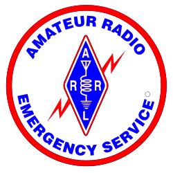

mini-SET 10.1
DEC Guide
A guide to the upcoming mini-SET for DECs and ECs

Michigan Section
Amateur Radio Relay League
Legal Notice
Copyright© 2010, the Michigan Section of the American Radio Relay League
The text of and illustrations in this document are licensed by the Michigan Section of the American Radio Relay League under a Creative Commons Attribution--Share Alike 3.0 Unported license ("CC-BY-SA"). An explanation of CC-BY-SA is available at http://creativecommons.org/licenses/by-sa/3.0/. The original authors of this document designate the Michigan Section of the American Radio Relay League as the "Attribution Party" for purposes of CC-BY-SA. In accordance with CC-BY-SA, if you distribute this document or an adaptation of it, you must provide the URL for the original version.
The Michigan Section, as the licensor of this document, waives the right to enforce, and agrees not to assert, Section 4d of CC-BY-SA to the fullest extent permitted by applicable law.
The ARRL Diamond and logo, the ARES logo and the ARPSC logo are registered trademarks of the American Radio Relay League in the United States and other countries.
All other trademarks are the property of their respective owners.
Abstract
The Michigan Section plans to have a number of exercises each year. This guide is intended to provide planning guidance for DECs and ECs preparing for the first of those exercises in 2010.
The point of any exercise should be to accomplish something. This section outlines some of the key objectives for the current exercise.
2.2. Structured Communications
The October 2009 SET had intended to demonstrate a structure flow of messages between the counties and the State EOC, along existing chain of command lines. (If you will recall, an earlier exercise along an incident-specific structure elicited some significant complaints.)
The results were not encouraging. Only one of the section nets organized as expected, and few counties or Districts attempted to exploit the NTS structure. The exercise structure did leave the Districts a lot of opportunity to apply their own creativity, but apparently the intent was insufficiently clear.
For this exercise, net schedules and message paths will be detailed ahead of time. Each section net has a schedule and specified liaisons. Each District has specified liaisons. There will still need to be some thought applied to the interface between the District and the appropriate VHF net, but both responsible parties are known well ahead of time.
2.3. District Communications Plan
During the 2009 SET it also became evident that not all Districts have thoroughly thought through within-District communications paths. This issue is discussed in more detail in a later section.
Although most communications in any incident is local, and most of that is tactical, strategic communications, whether local or otherwise, requires a higher level of discipline. NTS procedures and structures provide that discipline within amateur radio.
Each program requires at least a few people that are familiar with the existing NTS network and how it works. There is a summary later in this document. All individuals operating in ARES/RACES should have at least some familiarity with NTS procedures. There is significant NTS training happening around the Section so at least a few individuals capable of passing NTS formatted messages should already be available within each program.
3. District Communications Plan
One obvious failure that was exposed is the lack of adequate plans for communications among the counties in a District. Certainly there has been discussion, and also discussion about communications between Districts. But before we develop between District plans, we need to have the problem solved within a District.
Many counties, and even a few Districts, have call trees established, although these are rarely up to date. Certainly, we should use every technology at our disposal, and the telephone is a common, and reliable mode.
However, this mode will not work if the numbers are out of date, if we only have home numbers and people are away from their phones, or, of course, if the phones are out. These systems need to be tested frequently, but backup mechanisms must also be in place.
Many programs have pagers, either provided by their counties, or developed by the programs themselves. Pagers tend to be more reliable than cellular systems, but few, if any, Districts have paging systems for all the counties in the District.
Most, if not all, Districts have email lists for notifying the various ECs of an event. However, email is not real time, and most ECs do not have mobile email devices, so email is not appropriate for notfication of an incident. In addition, many types of incidents can impact local Internet connections (although widespread Internet outages are virtually unheard of).
In cases where all ECs have cellular telephones, notifications based on text messaging can be effective. However, keep in mind that in the event of an actual incident, or even a high profile exercise, cellular systems will fail almost immediately, so this method is of limited use in the event of an actual incident.
Many programs have some sort of scheme for notification by repeater, and in most cases, the various counties in a District are at least aware of the frequencies of repeaters in adjacent counties, so when the repeater infrastructure is unaffected, repeaters are of course useful tools.
However, repeaters often have their vulnerabilities. Often, they are higher profile than home stations, so are more likely to be affected by some kinds of weather events. Repeaters are often isolated, and may not be in hardened sites, so can be affected by vandalism and other human caused incidents. Repeaters often have some backup power, but frequently that backup power is limited.
Most programs do not have reliable simplex systems thought out, but certainly, they offer the potential for greater robustness than most other systems. To be effective, however, all parties need to know what is expected.
Some things to consider:
There must be a prearranged and well communicated plan for frequencies to be used
There must be a prearranged schedule
Each key station should be able to operate for an extended period of time removed from commercial mains
Each key station should have a backup plan in the event of antenna damage or equipment malfunction
The plan must be communicated
No plan can be effective unless all affected parties are well aware of the content of the plan and are capable of implementing it
Messages are carried across North America, and across the Section, by the National Traffic System. NTS operators practice constantly and as a result, are highly skilled at transmitting messges.
Practice makes perfect
In contrast to ARES operators who exercise only occasionally, many NTS operators practice their skill every day.
Of course, it is "common knowledge" that "NTS is dying", but here in the Michigan Section, at least, NTS traffic has increased every year since at least 2005 (the earliest year for which the section has data).
4.2. Why should ARES use NTS
Since NTS operators have the skill, it only makes sense to use the best possible service. Obviously, NTS has little to offer for the local, tactical communications that make up perhaps 99% of the communications needed for any incident. But when traffic needs to leave the county, then it only makes good sense to rely on those who do it every day. This also keeps resources free for urgent local needs.
4.3. The structure of NTS
NTS is structured into a series of layered nets. Each level sends a representative to the higher level. Net schedules are arranged to facilitate the rapid distribution of traffic across the system. The five layers of NTS nets are:
Local nets
The Transcontinental Corps
Local nets send a representative to the Section nets. A Michigan representative to the Eighth Region net (8RN) is designated for each meeting of 8RN to carry traffic from the Section nets to the Eighth Region. 8RN in turn sends a representative to the Eastern Area net (EAN). Transcontinental Corps (TCC) members then carry traffic between the areas, where it is then distributed downwards through the same structure until it can be delivered.
Michigan has four affiliated VHF nets and seven HF nets. These nets, their net managers, frequencies and schedules are available at
http://www.mi-nts.org/netinfo.php.
The VHF nets tend to be oriented toward training, although they handle substantial amounts of traffic. Some of the HF nets, notably QMN and MITN, are somewhat "hard core", focusing solely on traffic and generally having very short sessions. The others are more general nets where traffic is passed but that is not the sole purpose of the net.
Although there are significant month to month variations, Michigan nets report handling between 600 and 1000 messages each month, with approximately two-thirds of that handled by QMN, MITN and MVTN.
In order to engage all the affiliated nets, and to also encourage the DECs to develop relationships with their local VHF net, traffic will be routed through all the nets.
At the beginning of the exercise, the SEOC will transmit queries to each District through HF nets. These messages will flow through NTS to each District. The nature of the query will require that the District query each of it's counties. The result will then be pushed back through NTS ultimately arrivng at the SEOC via an HF net.
Four HF nets will meet in sequence receiving traffic from the SEOC. Each of these nets will include representatives from a VHF net. These reps will then take the traffic to the VHF net for delivery to the District. After composing a response, the District will deliver it's answer to that same VHF net, who in turn will send a representative to one of two HF nets meeting with the SEOC later in the morning.
Each HF net has a specific time slot with the SEOC. It is presumed that the VHF net will meet following the HF meeting at the beginning of the exercise, and before the HF net at the end of the exercise.
7. Other SEOC Communications
During any statewide exercise, each program often wants to test circuits from their local EOC to the State EOC. Limited opportunities will be available during this exercise.
Because we wish to engage all the HF nets, the HF phone capability of the SEOC will be exhausted during this exercise. Direct contact over HF phone from the individual counties is unwelcome for this exercise.
To accomodate direct communications with individual counties, the SEOC will monitor 3.563 MHz CW from 9:00 AM to 11:00 AM during the exercise.
The SEOC will not be using HF digital modes during the exercise.
This is a simplex exercise. As such, VHF phone connections will not be appropriate from most programs. To accomodate nearby programs or VHF/UHF relays, the SEOC will monitor 147.54 MHz and 446.00 MHz from 10:00 AM to 11:00 AM.
The SEOC will be available to receive formal traffic on
seoc@seoc.ampr.org
. Replies may or may not be timely. The station will also monitor CONV channel 911.